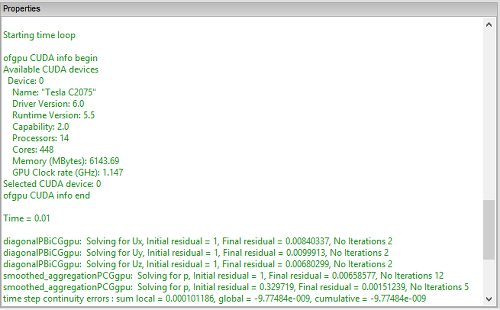

GPU v1.1 Linear Solver Library for OpenFOAM
ofgpu v1.1 is the latest version of our free GPL library that provides GPU (sometimes referred to as GPGPU) linear solvers for OpenFOAM® v2.2.x. The library targets NVIDIA CUDA devices on Windows, Linux, and (untested) Mac OS X. GPU acceleration holds the promise of providing significant speed up at relatively low cost and with low power consumption compared to other alternatives. If you want to try our ofgpu library with OpenFOAM then we recommend that you use either a dedicated (i.e., not displaying graphics) high-performance NVIDIA graphics card or a Tesla card.
OpenFOAM on Windows using ofgpuHosted by Caedium Professional
OpenFOAM GUI
Are you looking for a GUI driven, integrated simulation environment with GPU support for Windows and Linux with NVIDIA CUDA devices incorporating a selection of the RANS OpenFOAM solvers and various import/export filters?


Background
In our ofgpu library we use the Cusp library's Krylov solvers to produce equivalent GPU (CUDA) versions of the standard OpenFOAM linear solvers:
- PCG - Preconditioned conjugate gradient solver for symmetric matrices (e.g., p)
- PBiCG - Preconditioned biconjugate gradient solver for asymmetric matrices (e.g., Ux, k)
We also have support in ofgpu for the Cusp preconditioners:
- no
- diagonal
- smoothed_aggregation - equivalent to Algebraic Multi-Grid (AMG)
- scaled_bridson_ainv
- bridson_ainv
- nonsym_bridson_ainv
Prerequisites
- You are familiar with the OpenFOAM build process
- You are familiar with CMake
- You have a CUDA-capable NVIDIA device, such as a Tesla K20
Preparation
Install and test:
- Latest NVIDIA graphics driver
- Latest CUDA Toolkit (v5.5, including Thrust) and GPU Computing SDK
- Cusp v0.4.0 - sparse linear algebra library
- CMake - cross platform make
- OpenFOAM 2.2.x source distribution on Linux - following "OpenFOAM 2.2.x on Windows". Note that these modifications for Windows also work for Linux
Build Procedure
This build procedure assumes single precision.
- Download our free GPL licensed ofgpu library [last update Jan. 17, 2014 to v1.1].
- Configure and generate the build system for ofgpu with CMake, Set the
CMAKE_INSTALL_PREFIXvariable to<ofgpu-root>/install - Build ofgpu
- On *nix systems
make installand create the symbolic link:ln -s <ofgpu-root>/install/release/lib <ofgpu-root>/install/lib - For Windows you will need to build ofgpu natively using Visual Studio and then transfer ofgpu.dll and ofgpu.lib to your Linux system for cross compiling. Place your natively compiled Windows files in
<ofgpu-root>/install/win/libon your Linux system.
- On *nix systems
- Patch your OpenFOAM source with our CUDA modifications. Note that this is the same source code patch that adds Windows support for OpenFOAM 2.2.x.
chmod ug+x <OpenFOAM-root>/src/gpu/Allwmake- Build OpenFOAM in the usual manner, but with the addition of the environment variables:
WM_GPU='CUDA'CUDA_ARCH_PATH=<ofgpu-root>WM_PRECISION_OPTION=SP
Note that single precision is required. Double precision is untested.
The build process will produce the following 2 new OpenFOAM libraries:
$(WM_PROJECT_DIR)/platforms/<platform>/lib/cuda/[lib]gpu.[so|dll]$(WM_PROJECT_DIR)/platforms/<platform>/lib/gpuless/[lib]gpu.[so|dll]
Under Windows you will need to have the $(WM_PROJECT_DIR)/platforms/<platform>/lib/cuda directory in your executable path to use the library.
Example Case
For an example of a GPU-enabled case try pitzDailyGpu.
The GPU library is loaded in <case>/system/controlDict with:
functions
{
cudaGpu
{
type cudaGpu;
functionObjectLibs ("gpu");
cudaDevice 0;
}
}
As an example the p and U|k|epsilon linear solvers in the <case>/system/fvSolution file are modified as follows:
p
{
solver PCGgpu;
preconditioner smoothed_aggregation;
tolerance 1e-06;
relTol 0.01;
}
"(U|k|epsilon)"
{
solver PBiCGgpu;
preconditioner diagonal;
tolerance 1e-05;
relTol 0.1;
}
Notes
OpenFOAM is a registered trademark of OpenCFD and is unaffiliated with Symscape.
Feedback
Questions? Ideas? Problems?

Comments
Error Compiling
HI,
thanks for your gpu code. I tried to compiling it but I got some errors. I follow all your steps but it seems there are some error with matching function in sparsematrixargs.h.
PBiCGgpu.C: In member function ‘virtual Foam::solverPerformance Foam::PBiCGgpu::solve(Foam::scalarField&, const scalarField&, Foam::direction) const’:
PBiCGgpu.C:104:1: error: no matching function for call to ‘ofgpu::SparseMatrixArgs::SparseMatrixArgs(const char*, Foam::label, Foam::label, Foam::UList::const_iterator, Foam::UList::const_iterator, Foam::UList::const_iterator, Foam::UList::const_iterator, Foam::UList::const_iterator, Foam::UList::const_iterator, Foam::UList::const_iterator, Foam::UList::const_iterator, Foam::UList::iterator, Foam::UList::const_iterator, const label&, const scalar&, const scalar&, Foam::scalar&, Foam::scalar&, Foam::label&, bool&)’
)
^
PBiCGgpu.C:104:1: note: candidates are:
In file included from PBiCGgpu.C:24:0:
ofgpu/sparsematrixargs.h:46:5: note: ofgpu::SparseMatrixArgs::SparseMatrixArgs(const char*, ofgpu::index, ofgpu::index, const index*, const index*, const index*, const real*, const real*, const index*, const index*, const real*, ofgpu::real*, const real*, ofgpu::index, ofgpu::real, ofgpu::real, ofgpu::real&, ofgpu::real&, ofgpu::index&, bool&)
SparseMatrixArgs(char const * const preconditionerName,
^
ofgpu/sparsematrixargs.h:46:5: note: no known conversion for argument 7 from ‘Foam::UList::const_iterator {aka const double*}’ to ‘const real* {aka const float*}’
ofgpu/sparsematrixargs.h:24:10: note: ofgpu::SparseMatrixArgs::SparseMatrixArgs(const ofgpu::SparseMatrixArgs&)
struct SparseMatrixArgs {
^
ofgpu/sparsematrixargs.h:24:10: note: candidate expects 1 argument, 20 provided
Best Regards
Flora
Compile OpenFOAM in single precision
It appears you are trying to compile OpenFOAM in double precision (DP) with ofgpu in single precision (SP)
Confusion and compiling errors.
Hi,
Thanks for the GPU code. I followed the building instruction to step 3. The ofgpu was successfully built how ever in the /install folder, there is only one folder named lib and there is only one file inside it: libofgpu.so. In this case, does it mean there is no need to perform the step as stated in instruction: ln -s /install/release/lib /install/lib ?
With the assumption that there is no need to create the soft link, I went on to step step 4. I'm not sure about the meaning of "CUDA modification". Is it simply apply the "MinGW Windows Modifications" patch at the root directory of OpenFOAM 2.2.x or I need to start from step 1 on webpage(http://www.symscape.com/openfoam-2-2-x-on-windows) to Install MinGW-w64 cross-compiler and zlib" first?
Any suggestion is appreciated.
Best wishes,
Alex
Set build type for cmake
Sounds like you didn't set the build type (release) for cmake, that is why you are missing the release folder.
You only need the MinGW-w64 compiler if you are going to cross compile for Windows.
Hi, Thanks for your
Hi,
Thanks for your reply. After I set the build type to release. The problem solved! Then I followed step 4 and 5 without any problem. (I also did "git checkout 8a983dba63b246772c69ed0fa9cc3b3e33a10f92" to make sure the version is right)
However, at step 6, after sourcing the provided .bashrc and exporting WM_GPU='CUDA' CUDA_ARCH_PATH=/home/chenhui_epcc/ofgpu-1-1-0 and WM_PRECISION_OPTION=SP, I started to execute the Allwmake in the OpenFOAM root directory. Then I got several errors. The first one is(the error message is in the end of the code):
---------------------------------------------------------------------------------------------------------------------------
SOURCE=signals/sigFpe.C ; g++ -m64 -Dlinux64 -DWM_SP -Wall -Wextra -Wno-unused-parameter -Wnon-virtual-dtor -O3 -DNoRepository -ftemplate-depth-100 -DFOAM_USE_INOTIFY -IlnInclude -I. -I/home/chenhui_epcc/OpenFOAM/OpenFOAM-2.2.x/src/OpenFOAM/lnInclude -I/home/chenhui_epcc/OpenFOAM/OpenFOAM-2.2.x/src/OSspecific/POSIX/lnInclude -fPIC -c $SOURCE -o Make/linux64GccDPOpt/sigFpe.o
In file included from /home/chenhui_epcc/OpenFOAM/OpenFOAM-2.2.x/src/OpenFOAM/lnInclude/FixedList.H:43:0,
from /home/chenhui_epcc/OpenFOAM/OpenFOAM-2.2.x/src/OpenFOAM/lnInclude/List.C:29,
from /home/chenhui_epcc/OpenFOAM/OpenFOAM-2.2.x/src/OpenFOAM/lnInclude/List.H:259,
from /home/chenhui_epcc/OpenFOAM/OpenFOAM-2.2.x/src/OpenFOAM/lnInclude/HashTable.C:30,
from /home/chenhui_epcc/OpenFOAM/OpenFOAM-2.2.x/src/OpenFOAM/lnInclude/Istream.H:184,
from /home/chenhui_epcc/OpenFOAM/OpenFOAM-2.2.x/src/OpenFOAM/lnInclude/token.H:455,
from /home/chenhui_epcc/OpenFOAM/OpenFOAM-2.2.x/src/OpenFOAM/lnInclude/UILListIO.C:28,
from /home/chenhui_epcc/OpenFOAM/OpenFOAM-2.2.x/src/OpenFOAM/lnInclude/UILList.C:92,
from /home/chenhui_epcc/OpenFOAM/OpenFOAM-2.2.x/src/OpenFOAM/lnInclude/UILList.H:330,
from /home/chenhui_epcc/OpenFOAM/OpenFOAM-2.2.x/src/OpenFOAM/lnInclude/ILList.H:39,
from /home/chenhui_epcc/OpenFOAM/OpenFOAM-2.2.x/src/OpenFOAM/lnInclude/IDLList.H:35,
from /home/chenhui_epcc/OpenFOAM/OpenFOAM-2.2.x/src/OpenFOAM/lnInclude/entry.H:45,
from /home/chenhui_epcc/OpenFOAM/OpenFOAM-2.2.x/src/OpenFOAM/lnInclude/dictionary.H:53,
from /home/chenhui_epcc/OpenFOAM/OpenFOAM-2.2.x/src/OpenFOAM/lnInclude/JobInfo.H:42,
from signals/sigFpe.C:28:
/home/chenhui_epcc/OpenFOAM/OpenFOAM-2.2.x/src/OpenFOAM/lnInclude/Hash.H:212:12: error: ‘intptr_t’ does not name a type
typedef intptr_t HashType;
----------------------------------------------------------------------------------------------------------------------------
And following that I got similar errors like:
----------------------------------------------------
/home/chenhui_epcc/OpenFOAM/OpenFOAM-2.2.x/src/OpenFOAM/lnInclude/Hash.H:219:21: error: ‘HashType’ was not declared in this scope
return Hash()(HashType(p), seed);
------------------------------------------------------------------
Any help is appreciated!
Compiler issue
Check your compiler supports 'intptr_t'
I fixed the intptr_t error by
I fixed the intptr_t error by adding:
#include <stdint.h>
to $FOAM_SRC/OpenFOAM/primitives/hashes/Hash/Hash.H
$FOAM_GPU_LIBBIN
I don't remember reading where $FOAM_GPU_LIBBIN had to be defined?
Its used in $FOAM_SRC/gpu/cuda/Make/files and breaks my build if not set. I've set it to $FOAM_LIBBIN.
$FOAM_GPU_LIBBIN
I think this is because you've made the assumption everyone uses bashrc. You haven't modified cshrc in your patch.
bashrc only
There are only so many hours in a day, so I focused my efforts on bashrc. I don't see how not supporting cshrc is a show stopper. Definitely it would be better if I mentioned no cshrc support in the documentation though.
bashrc
I completely agree symscape. I appreciate how much time you must have put into this already, thanks. I've got it working now in Suse Linux 12.3, with tcsh (not that I like csh, its just we're stuck with it here for historic reasons). The only other headaches with the install were getting 'scotch' to build (path issues) and finally putting the compiled libraries in the right folders. It seems to be working now.
If only I could get OpenFOAM to do this implicit coupled conjugate-heat-transfer problem with radiation and turbulence on a high-aspect-ratio mesh I'd finally be happy.
Building gpu-1-1-openfoam
Apologies in advance for a perhaps simplistic problem and incorrect programming references as I am not a programmer however did before attempting to build your extention built a standard openfoam distribution.
However on attempting to build your version have encountered the following error - (extract from the make.log file ...)
+ set -e
+ wmakePrintBuild -check
no git description found
+ /bin/rm -f OpenFOAM/Make/linux64Gcc48DPOpt/global.C OpenFOAM/Make/linux64Gcc48DPOpt/global.o
+ wmakeLnInclude OpenFOAM
+ wmakeLnInclude OSspecific/POSIX
+ OSspecific/POSIX/Allwmake
Found -- enabling inotify for file monitoring.
'/scratch/foam/foam-gpu/OpenFOAM-2.2.x/platforms/linux64Gcc48DPOpt/lib/libOSspecific.o' is up to date.
+ case $WM_COMPILER in
+ Pstream/Allwmake
+ wmake libso dummy
'/scratch/foam/foam-gpu/OpenFOAM-2.2.x/platforms/linux64Gcc48DPOpt/lib/dummy/libPstream.so' is up to date.
+ case "$WM_MPLIB" in
+ set +x
Note: ignore spurious warnings about missing mpicxx.h headers
wmake libso mpi
'/scratch/foam/foam-gpu/OpenFOAM-2.2.x/platforms/linux64Gcc48DPOpt/lib/openmpi-1.6.3/libPstream.so' is up to date.
+ wmake libso OpenFOAM
SOURCE=global/global.Cver ; sed -e 's!VERSION_STRING!2.2.x!' -e 's!BUILD_STRING!2.2.x!' $SOURCE > Make/linux64Gcc48DPOpt/global.C; g++ -m64 -Dlinux64 -DWM_SP -Wall -Wextra -Wno-unused-parameter -Wold-style-cast -O3 -DNoRepository -ftemplate-depth-100 -IMake/linux64Gcc48DPOpt -IlnInclude -I. -I/scratch/foam/foam-gpu/OpenFOAM-2.2.x/src/OpenFOAM/lnInclude -I/scratch/foam/foam-gpu/OpenFOAM-2.2.x/src/OSspecific/POSIX/lnInclude -fPIC -c
Make/linux64Gcc48DPOpt/global.C -o Make/linux64Gcc48DPOpt/global.o
vector.o:(.bss+0x24): multiple definition of `Foam::Vector::zero'
floatVector.o:(.bss+0x24): first defined here
vector.o:(.bss+0x18): multiple definition of `Foam::Vector::one'
floatVector.o:(.bss+0x18): first defined here
vector.o:(.bss+0xc): multiple definition of `Foam::Vector::max'
floatVector.o:(.bss+0xc): first defined here
vector.o:(.bss+0x0): multiple definition of `Foam::Vector::min'
floatVector.o:(.bss+0x0): first defined here
vector.o:(.data.rel.local+0x0): multiple definition of `Foam::Vector::componentNames'
floatVector.o:(.data.rel.local+0x0): first defined here
vector.o:(.data.rel.ro.local+0x0): multiple definition of `Foam::Vector::typeName'
floatVector.o:(.data.rel.ro.local+0x0): first defined here
collect2: error: ld returned 1 exit status
make: *** [/scratch/foam/foam-gpu/OpenFOAM-2.2.x/platforms/linux64Gcc48DPOpt/lib/libOpenFOAM.so] Error 1
Thereafter all compile attempts fail with include errors as a result of missing lnInclude directives.
I presume my problem is as a result of the global.C failure. Is this so or is the mpicxx.h warning appropriate and do you have any suggestions.
Many thanks in advance
Charles
Compile for SP
Assuming you've patched the correct version of OpenFOAM without any errors/warnings, then it appears that you are compiling for double precision (DP) whereas you should be targeting single precision (SP).
Single precision
Thanks for the reply, I always added the "setting" as an environment variable - export WM_PRECISION_OPTION=SP. I have now changed the etc/bashrc switch to SP and the build (running as I write) looks a lot better!
Thank you again
Kind Regards
Charles
Do not modify etc/bashrc
You do not need to modify etc/bashrc, just feed "WM_PRECISION_OPTION=SP" as argument to it
scotch not building
Hi
I'm also having trouble getting scotch to build. The error message is:
scotchDecomp.C:138:20: fatal error: scotch.h: No such file or directory
#include "scotch.h"
My OS is ubuntu 14.04. Trying to make openfoam 2.2.2 with gpu patch v3-mingw.
Any advice will be welcomed :)
Ah, sorry, fixed the scotch
Ah, sorry, fixed the scotch issue. Also a path issue. Just located my scotch.h file and put in the the full path :)
Run error
Hi,
After compile the source code, Finally I successful, but when I ran the tutorial, I got the error when console print to time = 1.
http://i4.photobucket.com/albums/y139/kid888/1-21-20156-53-52PM_zpsa5566...
Please take a look here.
Thanks.
patch error
Hi, I am facing difficulties in patching the OF source. Can I use the compiled .so library with a call in controldict using "libs"? What I really need to make the libofgpu.so works in a stand-alone mode (without patch file).
Thanks,
Guilherme.
Match Git commit id
You have to patch the exact version in Git that matches the commit id, anything less or more will be unreliable.
Hi, I have a problem with the
Hi,
I have a problem with the solver interFoam.
Running a job, I receive the following error:
FOAM FATAL IO ERROR:
Unknown symmetric matrix solver PCGgpu
Valid symmetric matrix solvers are :
4
(
GAMG
ICCG
PCG
smoothSolver
)
From function lduMatrix::solver::New
in file matrices/lduMatrix/lduMatrix/lduMatrixSolver.C at line 77.”
I tested job with solver simpleFoam, pimpleFoam and pisoFoam and I had no problem.
Where is the problem with interFoam?
Missing functions section in controlDict
I'd guess that you are missing the 'functions' entry from your controlDict to load the GPU library. Review the 'Example Case' in the documentation above.
Problem with interFoam solver
Hi,
Thanks for reply, but the problem is not the function cuda.
The function
functions
{
cudaGpu
{
type cudaGpu;
functionObjectLibs ("gpu");
cudaDevice 0;
}
}
has been properly inserted into the file controlDict.
As written in the previous post, I have done various simulations with other solver.
With the solver interFoam that presents the problem.
What could be the problem? A bug in the library?
gpu library failing to load
It is working fine for me with interFoam. Are you sure the gpu library loaded successfully? The error you are seeing appears to be because the library failed to load.
Patch not woking
Hi,
The patch that has to be applied to the OpenFOAM source code is not working for me. I have installed all the required versions of the libraries and tools. I am applying the patch to the mentioned version of OpenFOAM but the patch is not going through. It is producing the following errors -
patching file Makefile.inc.linux
patching file Makefile.inc.mingw-w64
patching file Makefile.inc.darwin
patching file common.c
patching file scotch.h
patching file Makefile
patching file common.h
patching file Makefile
patching file tecio.patch
patching file gpulibCUDA
patching file c
Hunk #1 FAILED at 12.
1 out of 1 hunk FAILED -- saving rejects to file c.rej
patching file c++
Reversed (or previously applied) patch detected! Assume -R? [n] n
Apply anyway? [n] n
Skipping patch.
2 out of 2 hunks ignored -- saving rejects to file c++.rej
patching file mplibOPENMPI
patching file general
Reversed (or previously applied) patch detected! Assume -R? [n] n
Apply anyway? [n] n
Skipping patch.
1 out of 1 hunk ignored -- saving rejects to file general.rej
patching file gpulibCUDA
patching file c++Debug
patching file c
patching file mplibMPICH
patching file mplibMPICH-GM
patching file cDebug
patching file c++Opt
patching file mplibOPENMPI
patching file c++Prof
patching file mplib
patching file cOpt
patching file mplibGAMMA
patching file X
patching file c++
patching file mplibMSMPI
patching file cProf
patching file general
patching file gpulibCUDA
patching file c++Debug
patching file c
npatching file mplibMPICH
patching file mplibMPICH-GM
patching file cDebug
patching file c++Opt
patching file mplibOPENMPI
patching file c++Prof
patching file mplibHPMPI
patching file mplib
patching file cOpt
patching file mplibGAMMA
patching file X
patching file c++
patching file cProf
patching file general
can't find file to patch at input line 4511
Perhaps you should have used the -p or --strip option?
The text leading up to this was:
--------------------------
|--- wmake/wcleanAll (.../tags/2.2.x-2) (revision 831)
|+++ wmake/wcleanAll (.../branches/2.2.x-2) (revision 831)
--------------------------
File to patch:
n: No such file or directory
Skip this patch? [y] y
Skipping patch.
1 out of 1 hunk ignored
can't find file to patch at input line 4522
Perhaps you should have used the -p or --strip option?
The text leading up to this was:
--------------------------
|--- wmake/wmakeLnInclude (.../tags/2.2.x-2) (revision 831)
|+++ wmake/wmakeLnInclude (.../branches/2.2.x-2) (revision 831)
--------------------------
File to patch:
Skip this patch? [y] y
Skipping patch.
1 out of 1 hunk ignored
patch: **** File wmake is not a regular file -- can't patch
Please help me fix it. Is there some other patch available?
Regards,
Manasi